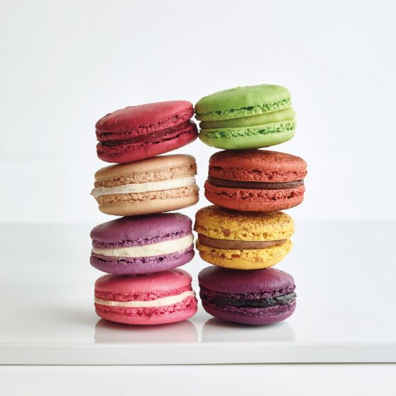

Ingredients:
1. ¾ cups powdered sugar (210 g)2. 1 cup almond flour, finely ground (95 g)
3. 1 teaspoon salt, divided.
4. 3 egg whites, at room temperature.
5. ¼ cup granulated sugar (50 g)
6. ½ teaspoon vanilla extract.
7. 2 drops pink gel food coloring.
Directions:
1.Make the macarons: In the bowl of a food processor, combine the powdered sugar, almond flour, and ½ teaspoon of salt, and process on low speed, until extra fine. Sift the almond flour mixture through a fine-mesh sieve into a large bowl.2.Make the macarons: In the bowl of a food processor, combine the powdered sugar, almond flour, and ½ teaspoon of salt, and process on low speed, until extra fine. Sift the almond flour mixture through a fine-mesh sieve into a large bowl.
3.Add the vanilla and beat until incorporated. Add the food coloring and beat until just combined.
4.Add about ⅓ of the sifted almond flour mixture at a time to the beaten egg whites and use a spatula to gently fold until combined. After the last addition of almond flour, continue to fold slowly until the batter falls into ribbons and you can make a figure 8 while holding the spatula up.
5.Transfer the macaron batter into a piping bag fitted with a round tip. Place 4 dots of the batter in each corner of a rimmed baking sheet, and place a piece of parchment paper over it, using the batter to help adhere the parchment to the baking sheet.
6.Pipe the macarons onto the parchment paper in 1½-inch (3-cm) circles, spacing at least 1-inch (2-cm) apart. Tap the baking sheet on a flat surface 5 times to release any air bubbles. Let the macarons sit at room temperature for 30 minutes to 1 hour, until dry to the touch.
7.Preheat the oven to 300˚F (150˚C). Bake the macarons for 17 minutes, until the feet are well-risen and the macarons don’t stick to the parchment paper. Transfer the macarons to a wire rack to cool completely before filling.
8.Make the buttercream: In a large bowl, add the butter and beat with a mixer for 1 minute until light and fluffy. Sift in the powdered sugar and beat until fully incorporated. Add the vanilla and beat to combine. Add the cream, 1 tablespoon at a time, and beat to combine, until desired consistency is reached. Transfer the buttercream to a piping bag fitted with a round tip. Add a dollop of buttercream to one macaron shell. Top it with another macaron shell to create a sandwich. Repeat with remaining macaron shells and buttercream.

